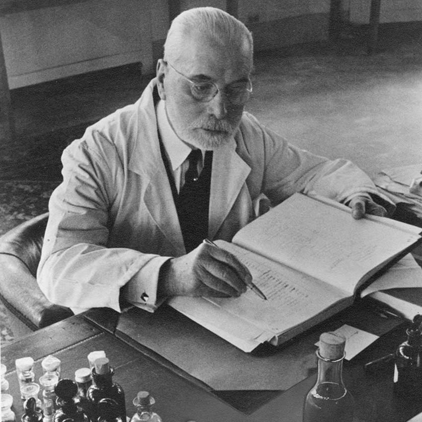

Ramon Monegal
Ramon Monegal
El maestro español que elevó el perfume a literatura. Creador del concepto de "imagen olfativa" y de éxitos de lujo como Flamenco.
 Jean-Claude Ellena
Jean-Claude Ellena
El padre del minimalismo. Convierte olores en poesía pura, eliminando lo superfluo para definir la elegancia de Hermès con Terre.
 Francis Kurkdjian
Francis Kurkdjian
El genio actual y director de Dior. Ha definido dos generaciones distintas con hitos mundiales como Le Male y Baccarat Rouge 540.
 Alberto Morillas
Alberto Morillas
El rey de la frescura. Es el perfumista más prolífico de la historia y creador de los iconos de la luz: Acqua di Giò y CK One.
 Sophia Grojsman
Sophia Grojsman
La "Picasso" de los aromas. Revolucionó el sector con sus perfumes envolventes tipo "abrazo" como Trésor y Paris.

Jacques GuerlainEl arquitecto de la historia. Creó los pilares de la perfumería moderna y el primer oriental mítico del mundo: Shalimar.